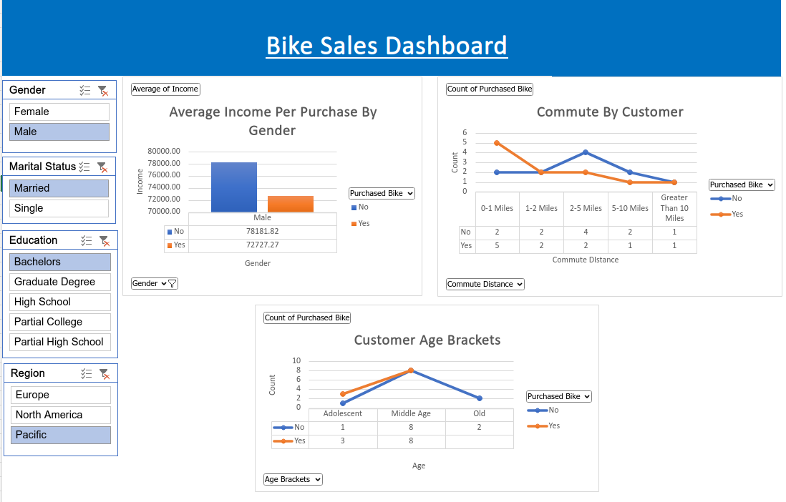
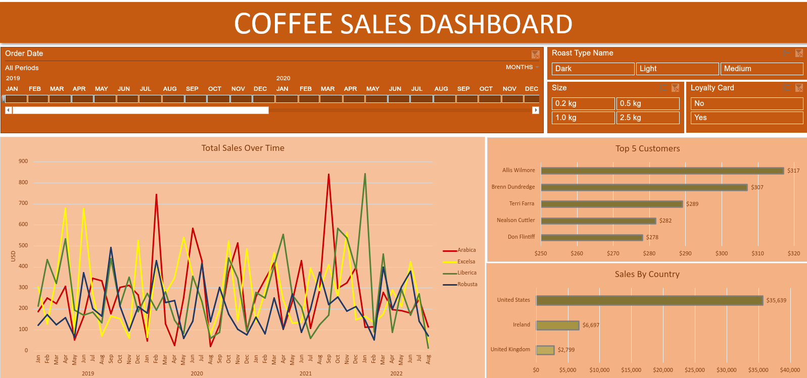

About Me
Welcome to my world! Born a rebel in India, I've always questioned the norm, sparking a lifelong passion for unraveling mysteries. With an insatiable curiosity and an unwavering thirst for knowledge, I've embarked on an exhilarating journey of self-discovery and growth.
Join me in my journey as I delve into the vibrant landscape of tech and business, exploring the limitless possibilities that the data world has to offer. From analyzing intricate data patterns to engineering impactful solutions, I've dedicated myself to mastering the art of turning raw information into transformative insights. Working on self to pave the way for an exciting future, filled with innovation and exploration.

Venturing into the world of data analysis, I explored COVID-19 data using SQL, delving into trends and insights to understand the pandemic's impact on society.

Tackled my first data cleaning project on Nashville's housing data. Learned to ensure data accuracy for better real estate decisions.

Exploring the financial path, conducted a comprehensive stock analysis of the Nifty top 10 using recent data, uncovering valuable insights into market trends and performance.

Delving into data acquisition, this project allowed me to master BeautifulSoup and Requests in Python, enabling me to collect significant information from websites effectively.

Produced insightful visualizations that revealed trends and patterns, fostering a better understanding of pandemic-related information and implications.

Analyzed store sales data in the USA, creating compelling visualizations that provided actionable insights and facilitated data-driven decision-making for businesses and their products.

Undertook an insightful project on bike sales data using MS Excel, paving the way for a profound learning experience and practical application of my skills.

Explored coffee sales data using MS Excel, building an interactive dashboard and enhancing my analytical skills in the process.